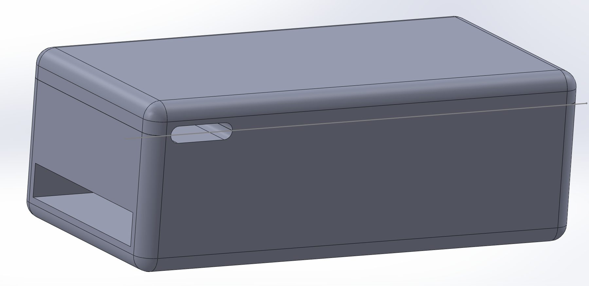
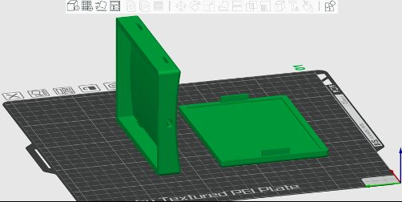
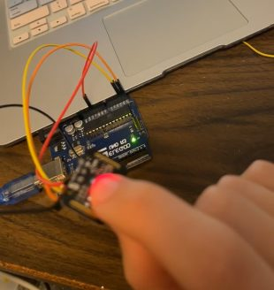
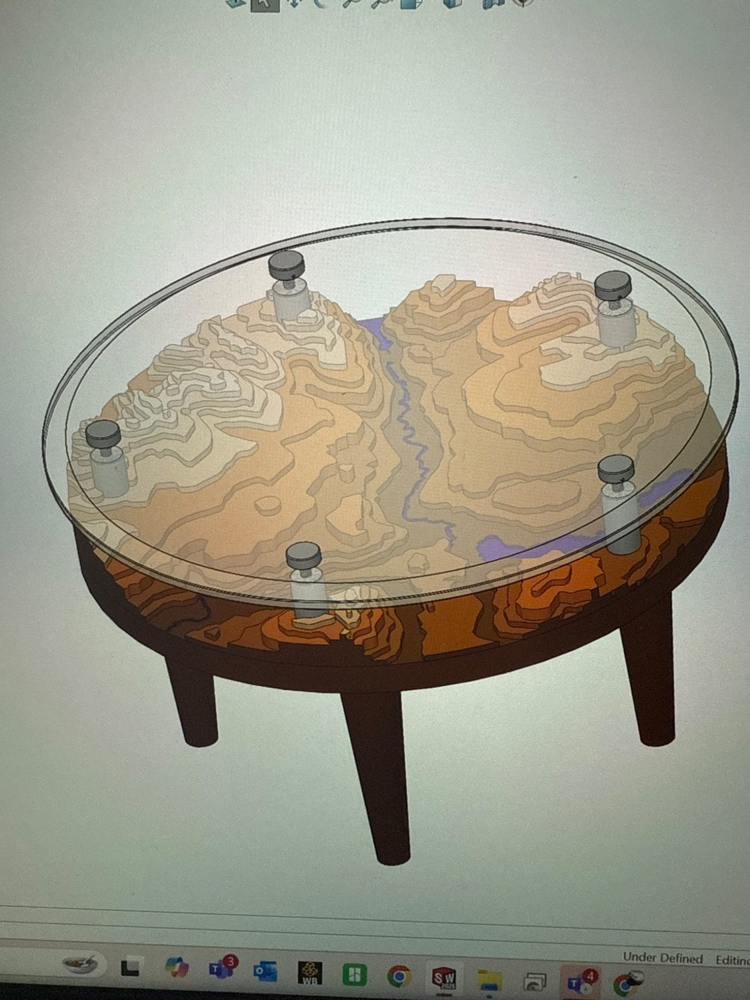
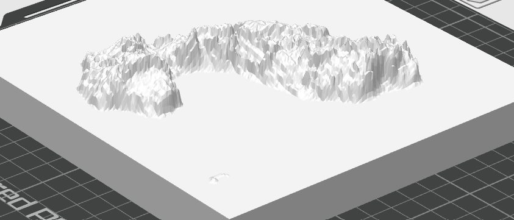
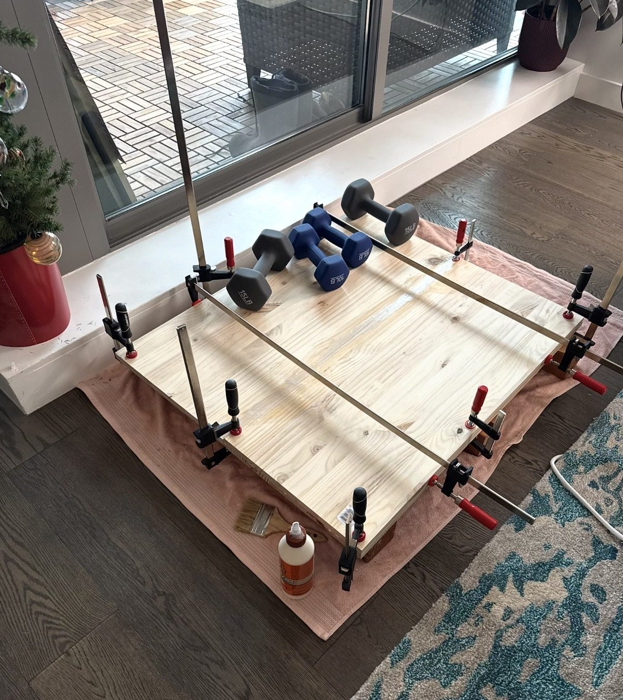
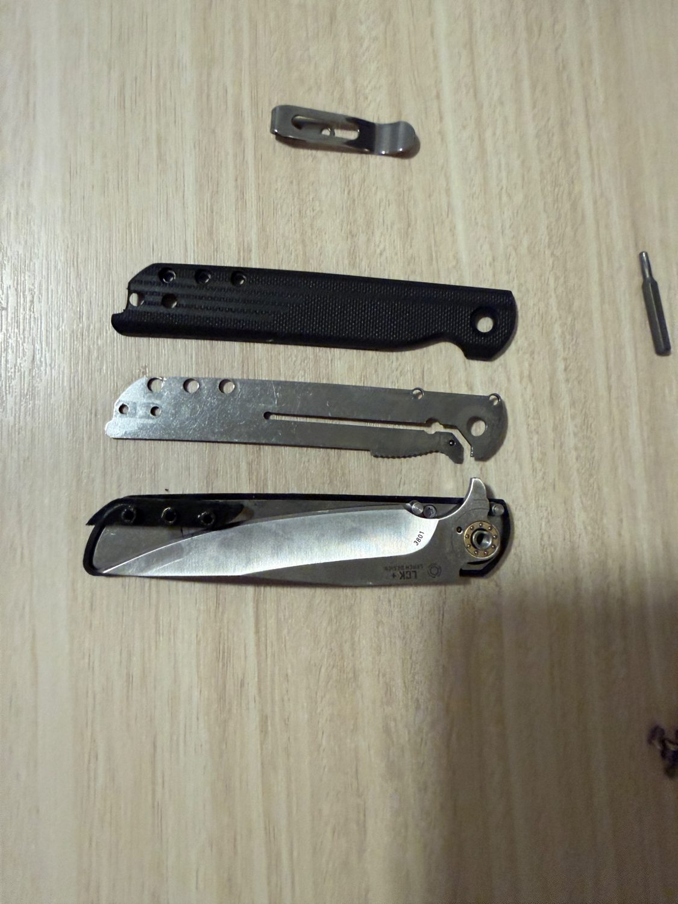

Self-directed builds in embedded systems, biomedical mechatronics, digital fabrication and UAV design, with implementation details and real photographs. In-progress concepts are labelled as such.
01 / EMBEDDED ELECTRONICS · FLUID SYSTEMS · WEB INTERFACE
Six-Zone Smart Irrigation System
Built a six-zone smart irrigation system that measures soil moisture in individual garden beds and automatically waters beds according to programmable thresholds. Integrated Google Home control and monitored the supply bucket’s water level to account for the available reservoir supply.
6 + 6Moisture inputs / valves
12 VValve actuation
0.19 L/sPump rated flow
Individually monitored six garden beds and programmed moisture-responsive watering logic, rather than using the same fixed schedule for every bed.
Controlled six 12 V solenoid valves and a reservoir-fed pump through an ESP32/Raspberry Pi-based electrical and control architecture.
Monitored the water level in the supply bucket and integrated the irrigation controls with Google Home for convenient household operation.
Implemented manual control alongside automatic moisture-based watering, with a browser interface supported by Node/Express and React/Tailwind.
Each garden bed provides a moisture reading to the controller. Programmable watering decisions select the relevant valve and pump; reservoir water-level sensing provides additional information about supply availability. Google Home integration provides a convenient control path alongside the dedicated web interface.
Engineering considerations
Converting sensor measurements into robust per-zone decisions without confusing analog sensing and higher-current actuation.
Electrical isolation and distribution for pump/valve switching; handling manual commands and automatic logic in one system.
Routing and serviceability of tubing, reservoir, sensors, controllers and wiring in an outdoor layout.
Coordinate moisture thresholds, water-level monitoring, voice/smart-home control and manual override so the system is practical to operate and maintain.
Prototype status: The photographs document a control-system build. They do not, by themselves, establish completed long-term outdoor deployment or measured water savings.
A personal biomedical engineering proof of concept exploring how physiological sensing, embedded control and electromechanical actuation could be integrated into a wearable overdose-response device.
2020–23Project development
SpO₂Pulse-oximetry input
PWMActuator drive / feedback
Integrated MAX30101 / MAX32664 pulse-oximetry components, Arduino-based processing and actuator control into a system-level concept.
Investigated linear actuation using a PA-MC1 v3-style feedback-equipped actuator, PWM drive and position measurement for controlled mechanical deployment.
Modelled and 3D-printed wearable housings; iterated packaging and mounting around the electronics and actuation components.
The prototype required a wearable package accommodating sensors, a controller, actuation components and user attachment. I approached it as a full mechatronics problem: signal acquisition, control decisions, motion, ergonomics and enclosure iteration.
Validation boundary
Academic / exploratory prototype only. No clinical validation, drug-delivery accuracy, autonomous overdose detection performance, or regulatory approval is claimed. Photos and CAD demonstrate hardware architecture rather than a clinically deployable treatment.

Mechanical enclosure and packaging design

3D-print enclosure iterations

Sensor integration / early control electronics
Evidence and limits: Prototype photographs, enclosure CAD and pulse-oximeter hardware demonstrate mechanical and electronic integration. This work is a proof of concept, not a validated medical product or a claim of reliable emergency treatment.
ABSTRACT PROCESS VISUAL — NOT A DRONE RENDER03 — 04
03 / ADDITIVE MANUFACTURING · ROBOTICS · PRODUCT DEVELOPMENT ● IN PROGRESS — NO PERFORMANCE CLAIMS
Print-in-Place Drone
An active independent drone project exploring what can be designed directly for additive manufacturing, with the ambition of simplifying fabrication and assembly while retaining functional mechanical and electronic integration.
Planned integration: examine the trade-offs between printed structures, propulsion components, control hardware, wiring and serviceability.
Planned verification: move from print trials and fit checks to structural evaluation, bench-level integration and flight-test readiness before asserting performance.
Design for additive manufacturingMechanical integrationRapid iterationValidation planning
PROJECT SCOPE & STATUS
Currently in development. Dimensions, mass, materials, flight controller selection, print outcomes and flight results will be added when documented. The illustration is a conceptual manufacturing graphic—not a claimed image of the aircraft.
Why it matters
This project makes the entire design-to-test loop visible: choosing a printable architecture, interrogating the manufacturing limitations, integrating systems and documenting what survives real tests. My AirMetal work provided relevant UAV development experience, but this is a separate independent concept.
Photo requested: a CAD screenshot, slicer view, first printed part or assembly photo of your actual print-in-place drone. I have not used a generic drone photo to imply that it depicts your current design.

TABLE CONCEPT / CAD & FABRICATION PROCESS04 — 04
04 / CAD · DIGITAL FABRICATION · WOODWORKING
Topographical Landscape Table
Designed a custom circular landscape coffee table combining a three-dimensional topographical relief with a woodworking-built base and a clear glass top. The project spans terrain-data preparation, CAD assembly modelling, 3D print preparation and physical construction—bringing digital geography into a functional furniture concept.
Converted topographical features into a printable, layered 3D landscape; explored terrain scaling, resolution and contour transitions so the relief would remain recognizable when fabricated.
Designed the full circular table assembly in CAD, coordinating terrain layers, the wood structure, glass cover and standoffs/fasteners to balance visibility, support and appearance.
Prepared geometry in a slicer and made physical fabrication trials, identifying issues of print segmentation, alignment and layer-to-layer registration.
Cut, aligned and clamped wooden panels for glue-up, working through material movement, surface alignment and the dimensional accuracy needed for the table base.
Documented the design from CAD through print preparation and woodworking; photographs show work in progress, not a finished table.
The table is both a visualization and an integrated mechanical assembly. Digital elevation data must become manufacturable geometry; the terrain layers need to be located precisely beneath the glass, and the wooden frame must support the cover without hiding the relief. I used the CAD model to work through the geometry and components before fabricating and gluing the wooden structure.
Project status: CAD, print-preparation and shop-build stages are documented; the available photos do not establish that the final table is complete.

Digital terrain preparation

Woodworking and panel glue-up
MORE / FABRICATION & EXPERIMENTAL ENGINEERING
Additional fabrication & experiments.
Smaller projects still show useful engineering behaviour: make a hypothesis, manufacture a part, instrument a test and communicate what the evidence actually supports. Academic work is identified separately from independent work.

PERSONAL · MECHANICAL DESIGN
Custom Folding Knife — A Gift for My Dad
Designed and built a personalized folding knife as a gift for my dad, using a combination of woodworking, metalworking and precision mechanical assembly. The project required fitting shaped handle pieces to a metal folding mechanism while preserving correct pivot alignment, blade clearance and comfortable hand geometry.
Prepared and shaped wood components for the handle, paying attention to grain, feel in the hand and finish quality.
Worked with metal components and mounting holes to achieve a repeatable pivot fit, reliable opening/closing motion and adequate clearance between moving parts.
Performed fitting, assembly and finishing by hand, with the completed object intended as a personal, usable gift rather than a mass-produced product.
Explore more engineering work.
Explore my professional engineering projects or get in touch about robotics and mechatronics opportunities.
Developing an anthropomorphic hand concept around tendon routing, elastic return and servo-based finger actuation. Current design work focuses on mechanism packaging, joint motion, cable routing and potential IMU/limit-switch feedback. No finished build or performance validation is claimed yet.
Mechanical designActuationSensor integration
UAV · ADDITIVE MANUFACTURING · IN PROGRESS
Sub-250 g Print-in-Place Drone
Exploring a lightweight drone architecture targeting a total mass below 250 g, with print-in-place manufacturing and reduced assembly complexity as design drivers. Active work includes airframe geometry, printability and hardware packaging; target mass is a design requirement, not a measured result.